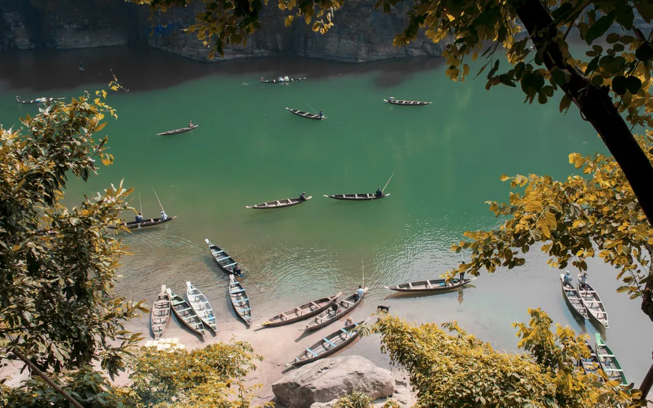
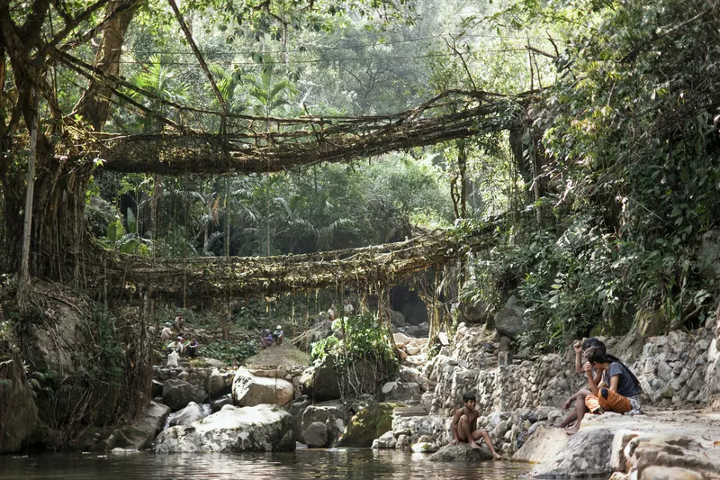
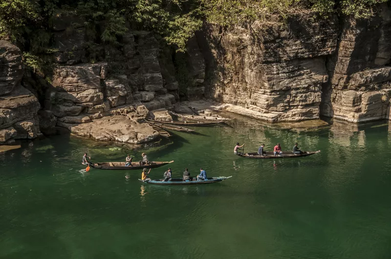
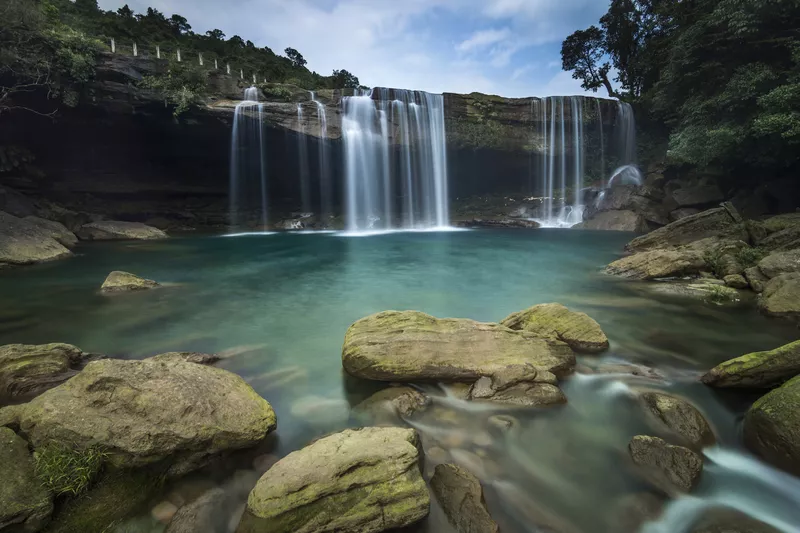
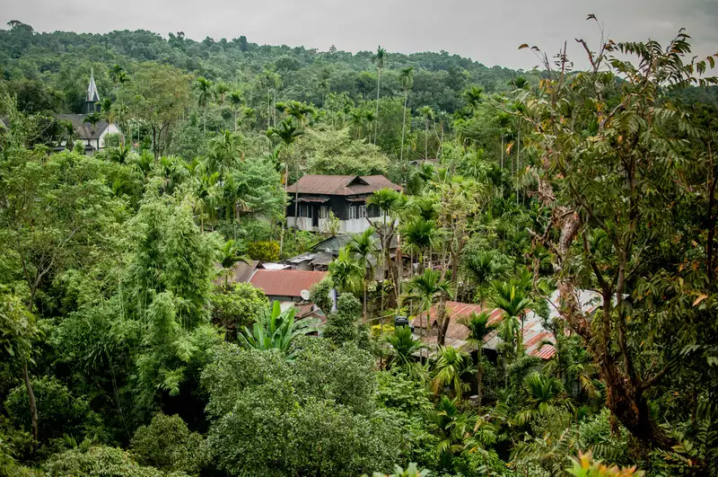
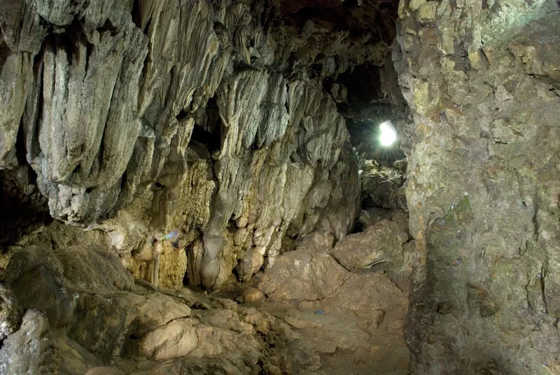

 Meghalaya tourism emphasizes on adventure tourism in Meghalaya that includes trekking, caving, and water sports. Rock climbing and Hand gliding are also being promoted with recognized adventure and sports associations.
Places to visit:
 Living Root Bridges Possibly Meghalaya's most famous attraction, deep in the dense tropical forest and shrouded in cloud and rain for much of the year, are some astonishing man-made natural wonders known as living root bridges. Inventive members of the Khasi tribe have trained them to grow from the roots of ancient rubber trees, native to the northeast region.
Dawki–Shnongpdeng About an hour east of Mawlynnong, in the West Jaintia Hills, the border town of Dawki is worth visiting for its pristine emerald Umngot River.  The absence of security makes it hard to believe that the International Radcliffe Line border between India and Bangladesh is situated there (and yes, locals from both sides do cross and intermingle). It's possible to go on a mesmerizing boat ride along the river, which is said to be one of the cleanest on earth.
 Krang Suri Falls In Meghalaya, there are waterfalls and there's Krang Suri. This small but stunning waterfall is tucked away near Jowai, about an hour northeast of Dawki and about three hours southeast of Shillong in the West Jaintia Hills.
Mawlynnong In addition to having an easily accessible living root bridge nearby, scenic Mawlynnong village was named the "Cleanest Village in Asia" by a travel magazine.  Also dubbed "God's Own Garden", the village is an outstanding example of community-based ecotourism. The locals have constructed a remarkable Sky View platform from bamboo atop the highest tree in the forest, nearly 80 feet up. It offers a bird's eye view of the village and panoramic view across to Bangladesh
Caves Meghalaya is the best destination for caving in India. There are more than 1,000 caves in the state, including the recently discovered longest sandstone cave in the world (Krem Puri in the Mawsynram region of the East Khasi Hills).  The most frequently visited cave is Mawsmai, near Cherrapunji. The Garden of Caves, near Laitmawsiang village on the way to Cherrapunji, is spectacular and has waterfalls. Arwah Cave can also be explored in the area and is known for its prehistoric fossils. Other caves are more challenging to visit and are suited to caving expeditions with appropriate caving equipment.